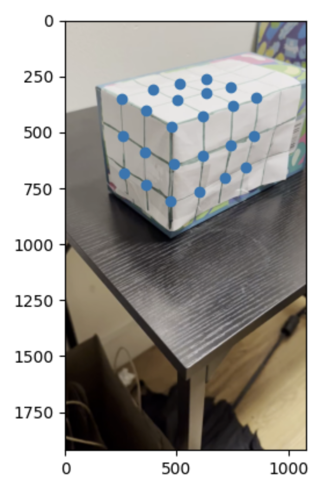

In this project, I implemented an augmented reality system where I captured a video and inserted a synthetic 3D cube into the scene. To achieve this, I started by calibrating the camera for each video frame using 2D image points whose 3D coordinates I measured and labeled. By computing a camera projection matrix, I was able to project the cube's 3D coordinates onto the video frames, making the cube appear seamlessly integrated into the scene.
Part 1: Creating the Object Field
To start off, I created a grid and placed it on a rectangular object. I then recorded this box from different angles as seen below. I then labeled these angles. I then selected 24 points to use as reference and labeled them with every box being 1 unit away from the next. Since this was a 3d field I used x, y, and z coords as shown below. Please click on 'Open the document directly' to access the video. For some reason the normal ways of sharing the video or not working, but everyone has access to the video on the drive.

My Keypoints
Part 2: Tracker
Next, I focused on tracking the selected points across all frames of the video. I used the cv2.TrackerMedianFlow_create tracker, initializing it with bounding boxes around the points in the first frame. For each subsequent frame, the tracker updated the positions of these points to ensure they stayed aligned with the corresponding features in the video. I also filtered out any poorly tracked or out-of-bound points to maintain accuracy. By the end, I had a reliable set of 2D coordinates for each point in every frame, which I could use for further processing.
To calibrate the camera, I computed a projection matrix that mapped the 3D world coordinates of the tracked points to their corresponding 2D image coordinates in each frame. I used the lstsq function to solve for this matrix using the 3D points I had manually defined and the 2D points tracked across the frames. This projection matrix allowed me to determine the camera's position and orientation relative to the scene in each frame, which was essential for accurately projecting the synthetic cube into the video. Please click on 'Open the document directly' to access the video. For some reason the normal ways of sharing the video or not working, but everyone has access to the video on the drive.
Part 3: Projecting the Cube
The final step was to project the cube into the video. I started by defining the cube's 3D vertices and then transformed them into 2D image coordinates using the projection matrix from the calibration step. With these 2D points, I used OpenCV's drawing functions to render the cube, connecting the edges to create its structure. As I processed each frame, the cube was consistently rendered in the correct position and orientation, making it appear as if it were part of the real-world scene. I then saved the final frames with the projected cube into the output directory. Please click on 'Open the document directly' to access the video. For some reason the normal ways of sharing the video or not working, but everyone has access to the video on the drive.
Final Project 2: Lightfields
Overview
In this project, I explored the fascinating concept of lightfields by working with datasets from the Stanford Light Field Archive. Lightfields capture all the light rays passing through a plane, allowing for advanced photographic effects. Using a grid of images, I implemented two key techniques: depth refocusing and aperture adjustments.
Part 1: Depth Refocusing
In the depth refocusing part of this project, I simulated changing focus in a scene by shifting and averaging images from a lightfield grid. By calculating shifts based on the desired focus depth and the grid positions, I brought objects at specific depths into focus while blurring others. I then created a depth sweep by generating frames at varying depths and combined them into an animated GIF to showcase the dynamic focusing effect. Below I showcased two examples, that I thought represented two different objects to demonstrate depth refocusing.
Chess Board
Lego
Part 2: Aperture Adjustments
To create a visualization of how varying the aperture size affects focus and depth of field I iterated over different aperture sizes and saving the results, it demonstrates the trade-offs between sharpness and background blur in light field imaging. The key here is a smaller aperture leads to more focus whereas a larger aperture introduces a background blur.
Lego
Part 3: What I Learned?
I learned that certain light field operations, like depth refocusing, can be achieved using straightforward algorithms, such as shifting and averaging images. This simplicity highlights the elegance of computational photography techniques in manipulating light field data.
However, I also came to understand the challenges posed by the sheer volume of data involved in light fields. These datasets are incredibly large, and if operations are not implemented efficiently, they can become computationally expensive and slow.
Bells and Whistles: New Dataset
These are two rows of a dataset I created. The dataset I created was 50 images large, or 10 rows by 5 cols. Below is a 2x5 sample of the images I used. All images were captured via iPhone.
Depth
Aperture
Potential reasons for suboptimal results: The subpar results from using a custom dataset can likely be attributed to several factors based on the manner with which I sampled. First and foremost, insufficient sample size. Specifically from an angular standpoint, I only captured 5 angles repeatedly, which to recreate a light field simply isn't enough. As you can see with my image, clearly averaging did not turn out well and the too few angular samples largely contributes to that. Additionally, not having a consistent set up likely also aided to bad results. Misalignment due to not having a stable rig and rather using my hand likely led to unfocused bad results. Without proper calibration for all camera parameters both intrinsic and extrinsic, also contributed to bad quality. Also, the Stanford dataset used profesional cameras in a profesional studio. I did not have such luxuries which degraded the dataset I used. Without proper sampling and equipment the effective aperture range was essentially limited and the depth refocusing on could not be done. More likely than not, these all compounded on one another to give me the subpar results I obtained.